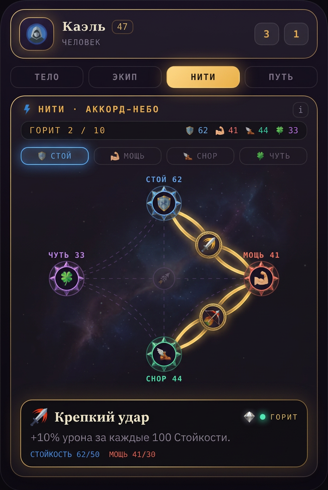
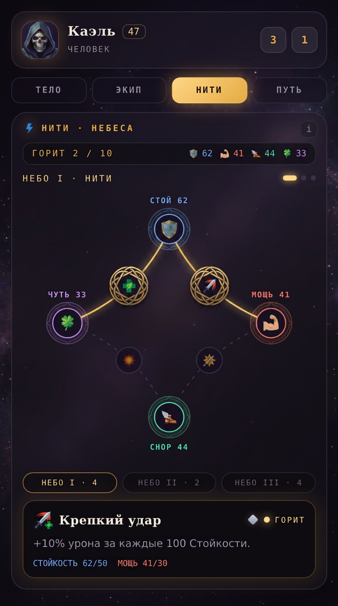
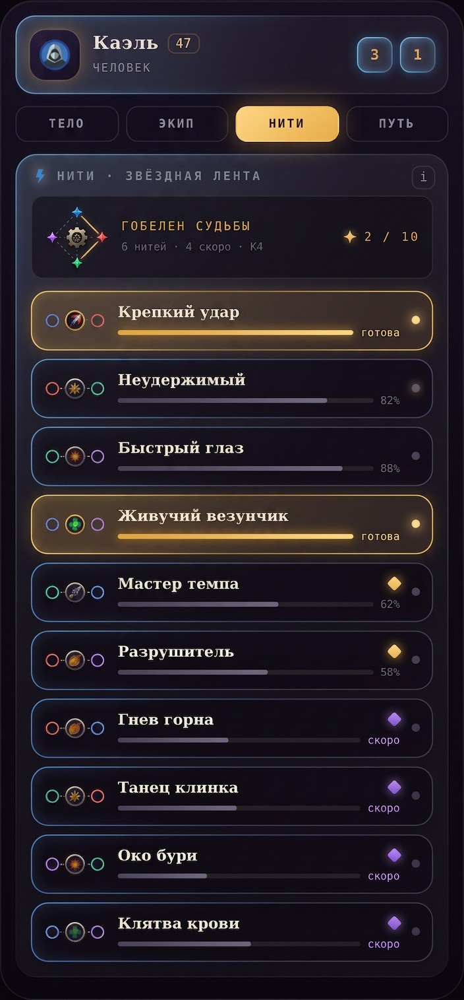
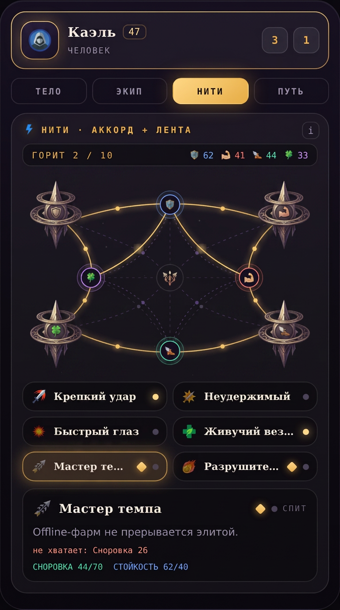

A1 · Аккорд-небохорды-ленты + фильтр по столпу, без pan/zoom
A2 · Небеса-страницыпейджер созвездий по ярусам, карта никогда не перегружена
A3 · Звёздная лентасигил K4 в шапке + feed строк-нитей, масштаб бесконечный
A4 · Аккорд + лентаобзор-хорды сверху + рабочий список с синхронным выбором